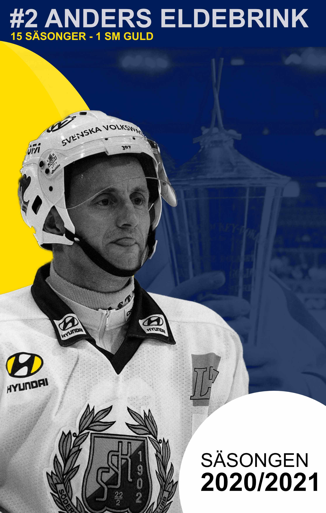
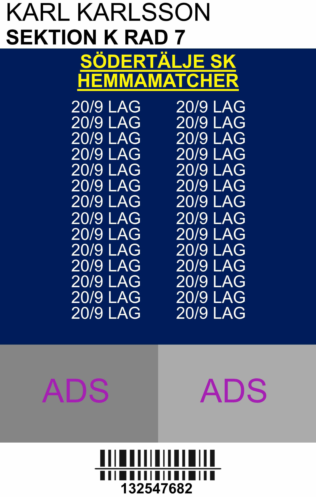

Säsongskort
Jag följer hockeylaget Södertälje SK och är säsongskort innehavare och har märkt att SSK brukar oftast
ha väldigt tråkiga design och noll visuell kommunikation så då bestämde jag mig att testa hur svårt det skulle vara
att designa ett kort.
Mitt kort är inspererat av ett klassiskt hockeykort där en ikonisk SSK spelare är på kortets framsida där hans namn, nummer och lite statestik står med.
Jag skulle kunnat ha med antal mål och matcher han spelade för klubben men ville inte heller lägga in allt för mycket information på
kortet då jag tycker det är snyggt som det är.
Baksidan har plats för reklam och scanning.
 